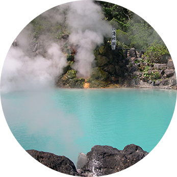
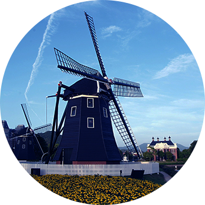
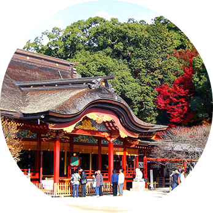
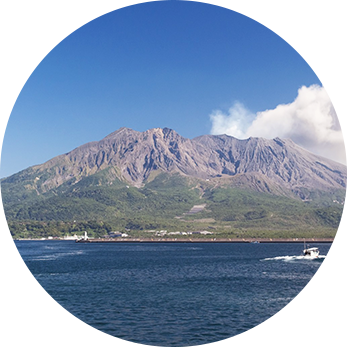
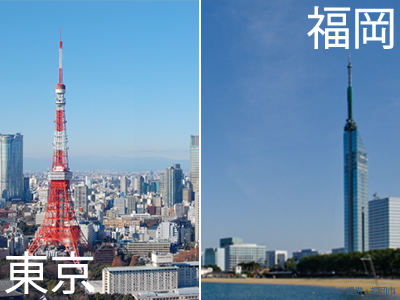

JMS小倉 東京オフィスだから出会える
こんなあなたにおすすめ！ポイント
22年の歴史あるJMS小倉では、九州へのUターン・Iターン婚活を応援しています。
故郷が同じ
っていいな！- 
九州
に住みたい！ - 
地元に
帰りたいな！
- 
九州出身の人と
一緒になりたい！ - 
里帰りも楽々！
出会い・恋愛・婚活が成功する3大メリット
-

福岡・東京2拠点で充実サービス！
JMS小倉は、福岡の小倉で20余年の長きにわたり
地元密着の結婚相談所として
会員様のサポートを行ってまいりました。
この度、関東エリアへの転勤や
九州エリアへのUターン婚活のため、
また既にご登録いただいたお客様のサポートを充実させるため、
月会費無し、お見合い無料等の料金プランはそのままで
JMS小倉 東京オフィスを豊島区池袋に開設いたしました。
-
お見合い時、安心のお立合いサポート！
お見合い時、もしも遅刻したら…。
カフェが混んでいてお見合いできる場所が見つからなかったら…。
そういった不安を解消するため、
お見合い場所が都外など遠方でない限り、
待ち合わせ場所でのお顔合わせまで立ち会いをいたします。
お見合い場所ではお2人でゆっくりお話ししていただくため
カフェ入口までのご案内で失礼させていただきます。
会員様へのアドバイスや相手の方へのアピール等も
お手伝いさせていただきます。
もちろん、無料サービスです。
-
追加のお見合い料金等不要！
JMS小倉ではご入会時にお支払いいただく金額と
成婚が決まってお支払いいただく成婚料以外は
1年間の活動において、
月会費（入会時の費用を分割払い時は除く）や
お見合い料金等が発生いたしません。
また、2年目以降は月5千円（年払い5万円）で
1年目と同じサービスをご提供いたします。